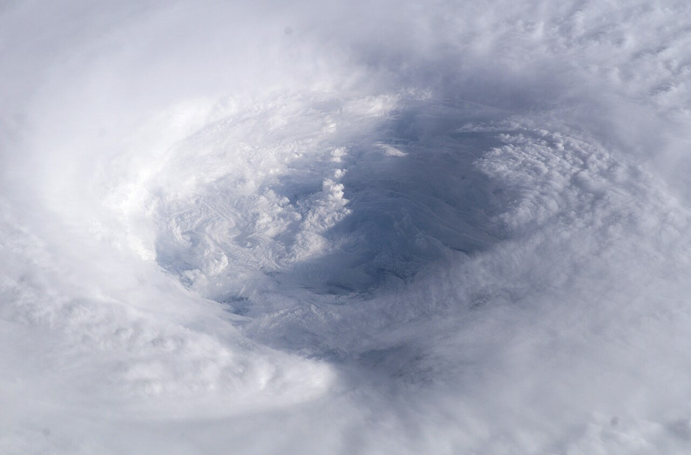

Light has a rhythm.
The outer ring follows the sun, from the first hint of dawn to the deep blue of night.
MEET FROST
Explore the day through light and temperature.
Follow the weather together.
GOLDEN HOUR
Clear skies and a softer sun. There’s still time to step outside.
PANES
Follow the light. Explore the temperature. Move through the hours and get a feel for the day ahead.
The outer ring follows the sun, from the first hint of dawn to the deep blue of night.
Follow the temperature around the inner ring. Scrub ahead and see how the day unfolds.
Forecasts, radar, and a shared sky. Familiar weather details, brought a little closer together.
FROST ROOMS
From the first forecast to what’s happening outside. Follow the weather together.

Euro turns it north earlier; GFS stays west longer. That timing gap is the whole forecast for the coast.
IN DEVELOPMENT FOR iPHONE AND MAC
A new perspective on weather.
Be part of what comes next.
Opens your email app
Frost is in development. Weather, participants, and conversations on this page are illustrative. This page makes no live weather requests and has no signup database or analytics scripts. The early access link opens your email app; sending a message shares your address and message with Sean at Frost. Photo sources, licenses, and display changes are listed in the image credits. GitHub Pages may process technical request information under its privacy statement.